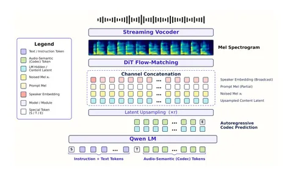

Сегодня начинаем разбирать техрепорт Qwen-Audio-3.0-TTS. Первую часть посвятим архитектуре.
Статья вышла в июле, а с тех пор уже успела появиться Qwen-Audio-3.1-TTS-Plus. На начало ноября она замыкает тройку лидеров на Provider Voice Arena от Artificial Analysis вместе с Eleven v4 Turbo и Eleven v4. Это ли не повод вчитаться, что же там придумали разработчики из Alibaba?
Большинство TTS-подходов можно условно разделить на два направления:
1) Авторегрессионные системы, которые генерируют речь последовательно. Тут есть развилка: можно предсказывать дискретные токены (RVQ или из одного кодбука), а можно генерировать непрерывные латенты VAE патч за патчем.
2) Неавторегрессионные системы, которые генерируют акустическое представление параллельно по оси времени. Например, F5-TTS, где мел-спектрограмма генерируется за несколько шагов flow matching.
Ещё эти механизмы можно комбинировать. В гибридных системах, к которым относится и Qwen-Audio-3.0-TTS, языковая модель авторегрессионно генерирует семантическую последовательность, а отдельный flow-matching-декодер по ней рендерит акустику. По устройству это развитие CosyVoice2 и CosyVoice3.
В Qwen используют семантический токенайзер с частотой 12,5 Гц. Аудио превращается в мел-спектрограмму, проходит через каузальный энкодер SenseVoice, а затем квантуется с помощью FSQ.
Токенайзер обучают в два этапа. Сначала он учится получать непрерывные представления для нескольких задач: распознавать речь, определять язык и эмоции, находить звуковые события, анализировать говорящего и аудио. Потом включают FSQ и продолжают обучение уже с дискретными токенами.
То есть по устройству всё очень похоже на токенайзер CosyVoice3, но frame-rate снизили с 25 до 12,5 Гц. Бесплатно ужать последовательность не получилось: при прежнем размере кодбука CER/WER на SEED-TTS-Eval выросли, а speaker similarity снизилась. Поэтому кодбук увеличили с 6 561 до 59 049 возможных кодов. Это позволило компенсировать потери: в аблейшенах на SEED-TTS-Eval такой вариант даёт более низкие CER/WER и более высокую speaker similarity, чем токенайзер CosyVoice3.
Ещё одна интересная деталь — что именно языковая модель передаёт в flow matching.
В обычном каскаде можно предсказать дискретный токен, взять его embedding из lookup-таблицы и отправить дальше. Здесь в акустическую модель передают напрямую hidden states языковой модели, на основе которых она предсказывает токены. В этом представлении остаётся больше контекста, полезного для произношения, просодии и выполнения инструкций. Похожий трюк был ещё в Tortoise: идеи из подвала Джеймса Беткера в 2026-м до сих пор работают.
Соберём всё вместе. Языковая модель предсказывает семантические токены и выдаёт hidden states. Их апсемплируют до временного разрешения мел-спектрограммы и подают в flow matching вместе с мел-спектрограммой аудиопромпта и эмбеддингом говорящего. FM стартует с шума и за несколько шагов рендерит целевую мел-спектрограмму. Вокодер превращает её в аудио. Для стриминга используют чанковый flow matching и стриминговый вокодер.
Чтобы все части хорошо работали вместе, разработчикам пришлось выстроить сложный процесс обучения. О нём расскажем во второй части.
Владимир Гогорян
